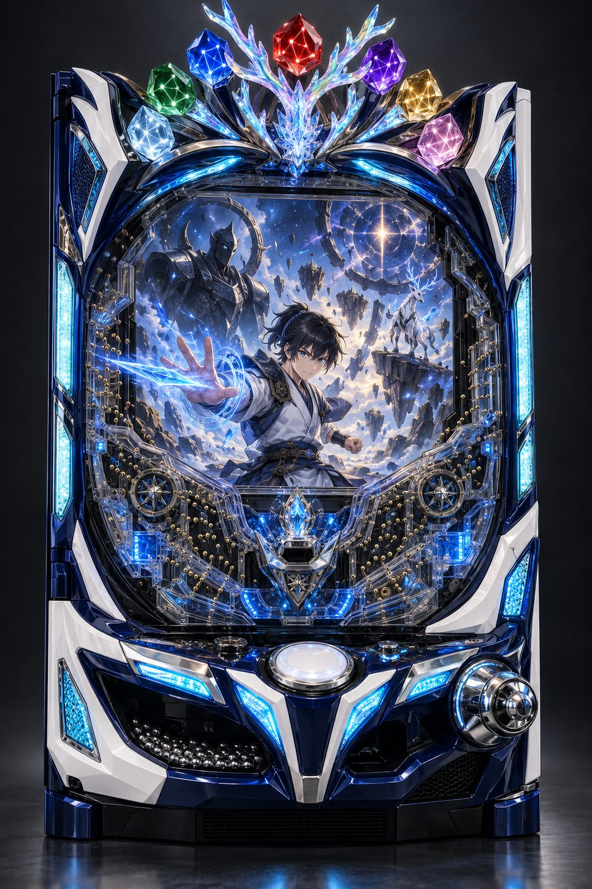
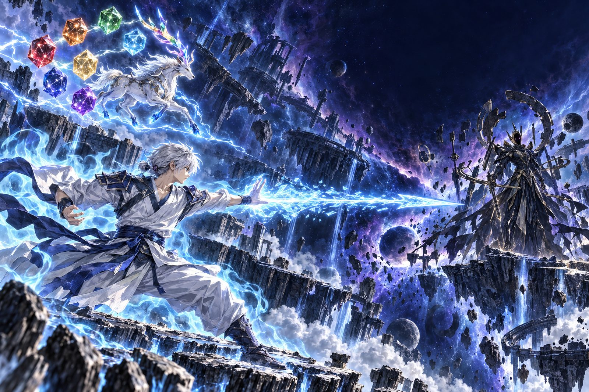
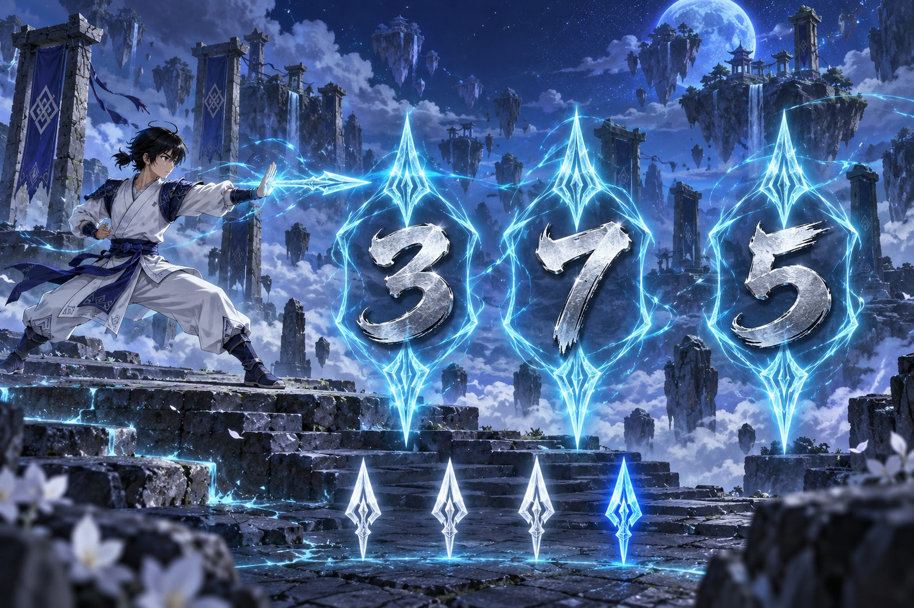
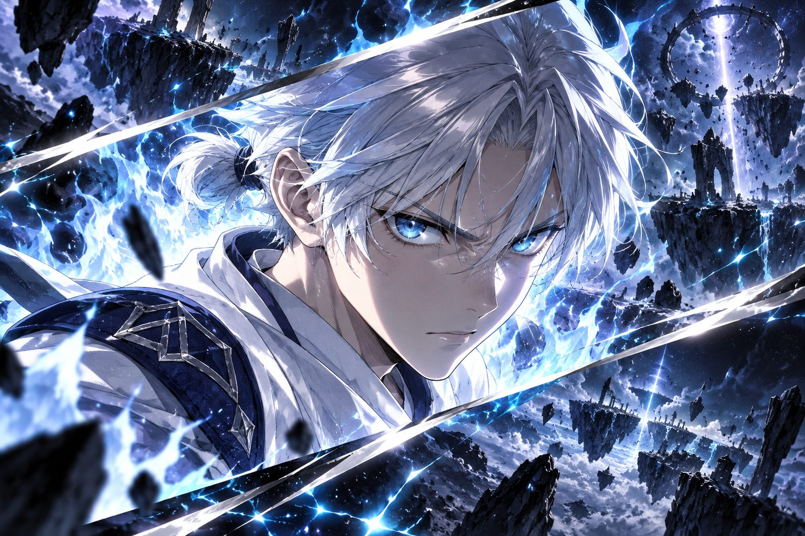
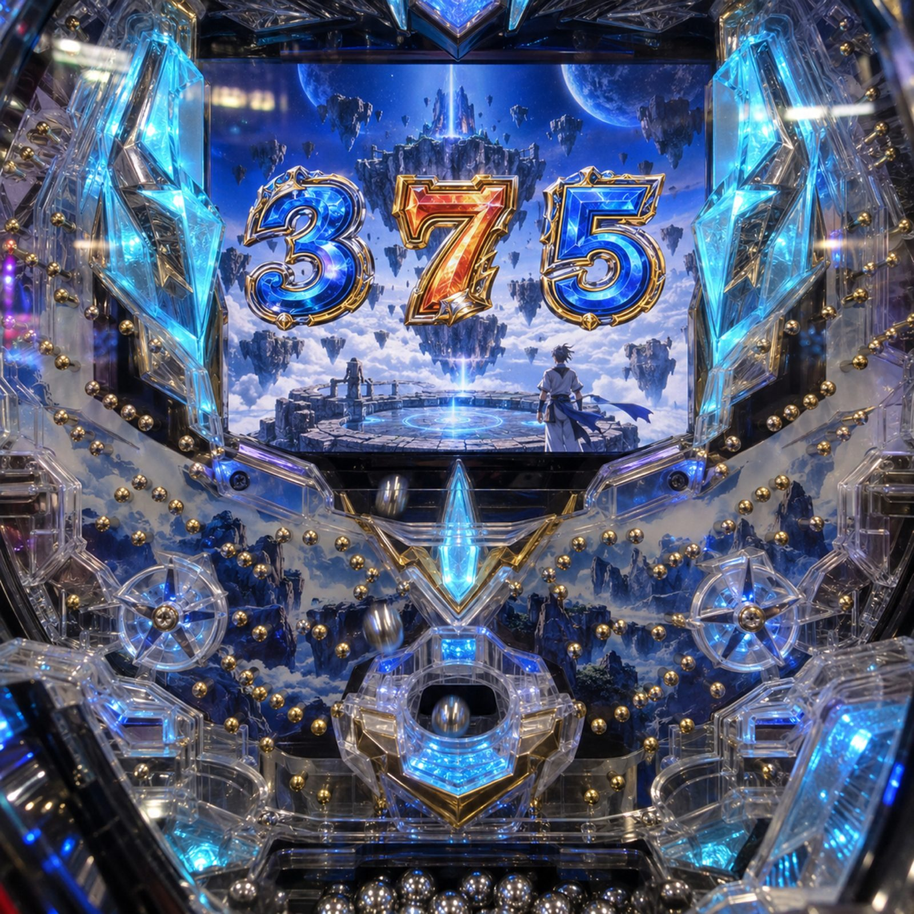
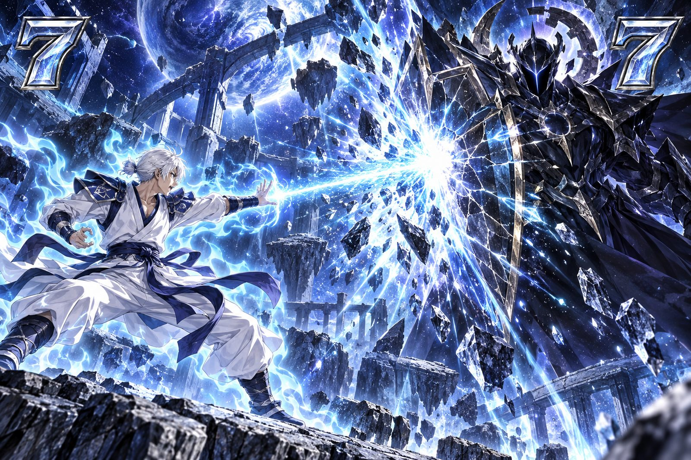
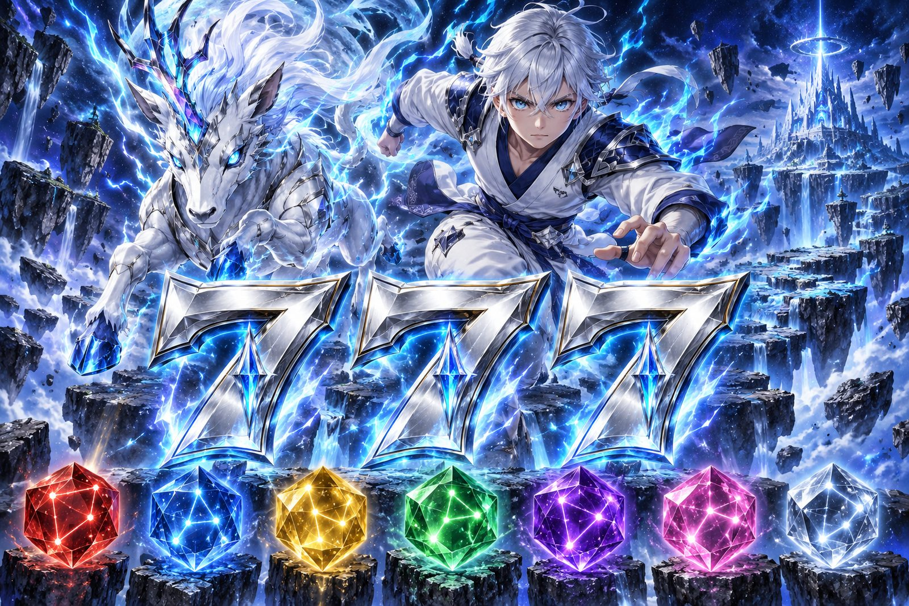
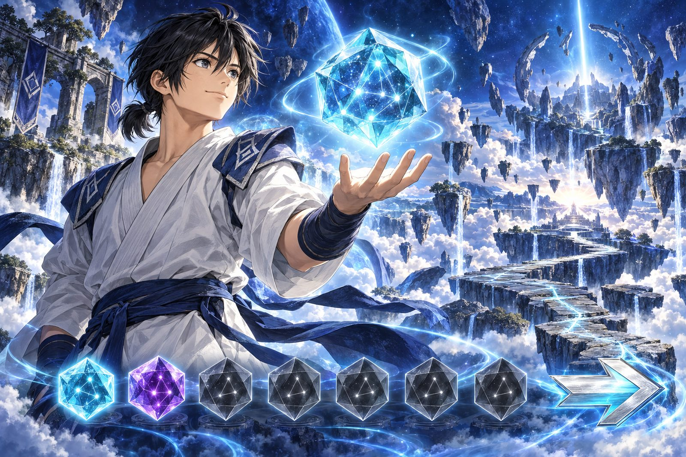

七光珠と修行の物語
七光珠は、
架空メーカーの架空機種です
機種情報/演出・解析情報
イー コウセイデン ナナツノコウジュ エルティー

練り上げた気が、
修行で
| 型式名 | e煌星伝七光珠LT-KS |
|---|---|
| メーカー名 | 両丸水産（架空メーカー） |
| 導入開始日 | 導入予定なし（架空機種） |
| タイプ | スマパチ／ラッキートリガー搭載・STタイプ |
| 大当り確率 | 1/349.9（低確率時）／1/79.9（高確率時） |
| RUSH突入率・ST振り分け | 50％（ヘソ）／100％（電チュー） |
| ST回数 | 125回転（錬気RUSH）／140回転（天雷RUSH）※電サポも同数 |
| ST継続率 | 約79.3％（錬気RUSH）／約82.9％（天雷RUSH） |
| 時短回数 | なし |
| LT突入条件 | 七光珠が7つ（初当り1つ＋錬気RUSH中の大当り6回） |
| LT到達率 | 約24.8％（RUSH突入後）／約12.4％（初当り1回あたり） |
| LT突入時から | 約5,690個（最大払い出し換算） |
| ラウンド数 | 3R or 10R × 10カウント |
| 賞球数 | 1&15 |
| 大当り出玉 | 450個（3R）／1,500個（10R）※最大払い出し |
| 備考 | 七光珠は |
| 大当り | 出玉 | 割合 |
|---|---|---|
| 3R ST・RUSH突入「初陣大当り」 | 450個 | 50％ |
| 3R通常・RUSH非突入「再起大当り」 | 450個 | 50％ |
| 大当り | 出玉 | 割合 |
|---|---|---|
| 10R ST・RUSH継続「天光大当り」 | 1,500個 | 50％ |
| 3R ST・RUSH継続「光珠大当り」 | 450個 | 50％ |

七光珠は、
筐体上部に、
| 選択 | 演出の特徴 |
|---|---|
| 修行の軌跡 | 修練から |
| 静寂 | 先読みを |
| 雷鳴 | 星角の霊獣が絡む予告が出やすい |
通常時の演出の出方を3種類から選べる。

| 保留の色 | 示唆 |
|---|---|
| 白 | 基本パターン |
| 青 | 修行演出の発展に |
| 銀 | 玄冥帝との決戦に |
藍の空に

リーチ中に

液晶の左右から

宇宙の裂け目から、
| 項目 | 内容 |
|---|---|
| 高確率時 | 1/79.9 |
| ST・電サポ | 125回転 |
| ST継続率 | 約79.3％ |
| 電チュー大当り | 10R・3Rが50％ずつ（すべてST） |
初陣大当りから入る下位RUSH。
| 七光珠の数 | 大当り終了後 |
|---|---|
| 1つ（初当り） | 50％で錬気RUSH／50％で通常時（光珠は消える） |
| 2〜6つ（錬気RUSH中） | ST125回転を再開 |
| 7つ（錬気RUSH中） | LT発動・天雷RUSH（ST140回転） |
| RUSH終了 | 通常時へ（光珠は消える） |
七光珠の数は、

| 項目 | 内容 |
|---|---|
| 高確率時 | 1/79.9 |
| ST・電サポ | 140回転 |
| ST継続率 | 約82.9％ |
| LT突入時から | 平均約5.8回 |
星角の霊獣と

| 大当り | 最大払い出し・終了後 |
|---|---|
| 初陣大当り（3R） | 450個・錬気RUSHへ |
| 再起大当り（3R） | 450個・通常時へ |
| 天光大当り・光珠大当り（錬気RUSH中） | 1,500個（10R）か450個（3R）・ST125回転 |
| 天光大当り・光珠大当り（7つ目） | 同上・LT発動で |
| 天光大当り・光珠大当り（天雷RUSH中） | 同上・ST140回転 |
大当り中は